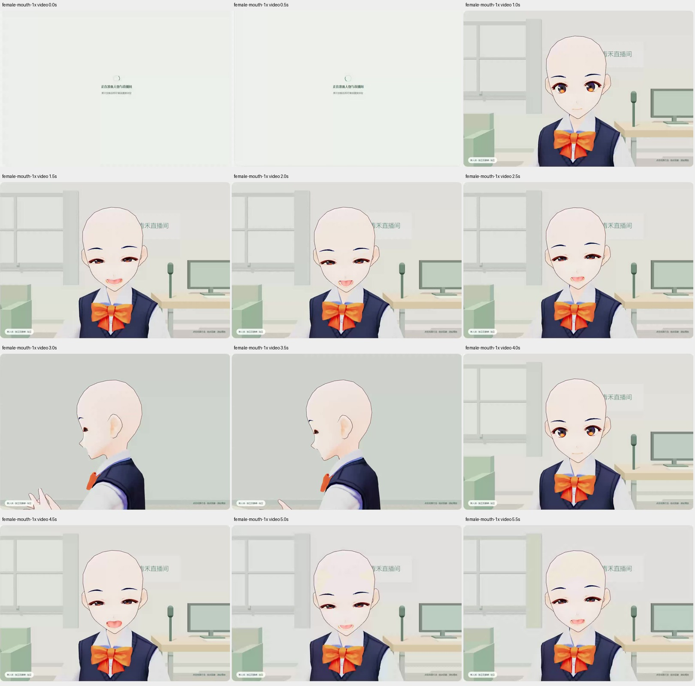

48843b9c7cc4 · 草稿修复与嘴宽回读
v11定向7项通过、0页面错误：新的API发色与同值裤装意图不再被旧草稿覆盖。嘴宽±4%仅首样，非完整五官系统；首次冷态编辑耗时仍有明确限制。
完整原片正常1×（可全屏）
保留加载/准备。近景包含真实UI操作和中性截图停留，不剪接/改速；讲话为程序口型演示而非音频唇同步。
全时段2fps工程抽审

抽帧不等同连续人工自然度验收。录像帧时间仅开发机此次窗口，不代表普通电脑达标。
结果和边界 · 实际检查原日志 · 时钟/道具/表情采样